Appendix A. Frequently Asked Questions
All 16 practical visual solutions adapted from Appendix A of Data Integration, Manipulation and Visualization of Phylogenetic Trees—covering tip label clipping, plotmath/HTML rich text, label repulsion, custom branch colors/linetypes, axis breaks, and margin trimming.
A.4.1 Tip Label Truncated
Prevent long tip names from clipping at panel edges by widening limits with xlim() or disabling clipping via coord_cartesian(clip='off') with expanded right plot_margin.

▶ Show / Hide Python Code xlimcoord_cartesiantheme_tree2margin
from ggtree import (
read_tree, ggtree, geom_tiplab, xlim, coord_cartesian,
theme_tree2, margin, plot_list,
)
tree = read_tree(
text="(Organism1.006G249400.1:0.03977,"
"(Organism2.022118m:0.01337,(Organism3.J34265.1:0.00284,"
"Organism4.G02633.1:0.00468)0.51:0.0104):0.02469);"
)
p = ggtree(tree) + geom_tiplab()
p_b = p + xlim(0, 0.08)
p_c = p + coord_cartesian(clip="off") + theme_tree2(plot_margin=margin(6, 120, 6, 6))
plot_list(p, p_b, p_c, ncol=3, tag_levels="A")
A.4.2 Modify (Tip) Labels
Substitute display tip labels cleanly using rename_taxa() or external metadata joins via % paired with geom_tiplab(aes(label=...)).
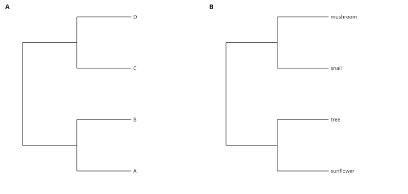
▶ Show / Hide Python Code rename_taxageom_tiplabxlimplot_list
from ggtree import read_tree, data_frame, ggtree, geom_tiplab, xlim, aes, NA, plot_list
tree = read_tree(text="((A, B), (C, D));")
d = data_frame(
label=["A", "B", "C", "D"],
label2=["sunflower", "tree", "snail", "mushroom"],
)
p = ggtree(tree) + xlim(NA, 3)
p1 = p + geom_tiplab()
p2 = p % d + geom_tiplab(aes(label="label2"))
plot_list(p1, p2, ncol=2, tag_levels="A")
A.4.3 Formatting (Tip) Labels (Plotmath & ggtext)
Render mixed italic/bold typography via R-style plotmath expressions (parse=True) or HTML/Markdown rich text labels via geom_richtext(..., label_color=NA).
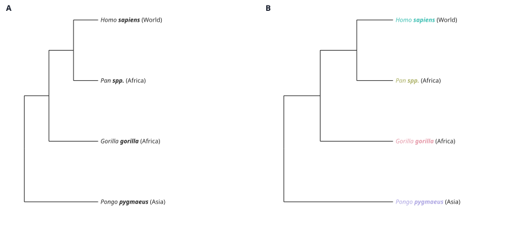
▶ Show / Hide Python Code geom_tiplabgeom_richtexttd_filterhexpand
from ggtree import (
read_tree, data_frame, ggtree, aes, xlim, NA, geom_tiplab,
geom_richtext, td_filter, hexpand, plot_list,
)
tree = read_tree(text="((a,(b,c)),d);")
genus = ["Gorilla", "Pan", "Homo", "Pongo"]
species = ["gorilla", "spp.", "sapiens", "pygmaeus"]
geo = ["Africa", "Africa", "World", "Asia"]
colors = ["#E495A5", "#ABB065", "#39BEB1", "#ACA4E2"]
d2 = data_frame(
label=tree.tip_label,
genus=genus,
species=species,
geo=geo,
lab=[f"italic({g})~bolditalic({s})~({ge})" for g, s, ge in zip(genus, species, geo)],
color=colors,
name=[f"<i style='color:{c}'>{g} **{s}**</i> ({ge})" for c, g, s, ge in zip(colors, genus, species, geo)],
)
p1 = ggtree(tree) % d2 + xlim(NA, 6) + geom_tiplab(aes(label="lab"), parse=True)
p2 = ggtree(tree) % d2 + geom_richtext(aes(label="name"), data=td_filter("isTip"), label_color=NA) + hexpand(0.35)
plot_list(p1, p2, ncol=2, tag_levels="A")
A.4.4 Avoid Overlapping Text Labels (ggrepel)
Use geom_label_repel() or geom_text_repel() to repel dense bootstrap annotations with leader segments and viridis fill scales.

▶ Show / Hide Python Code read_raxmlgeom_label_repelgeom_text_repelscale_fill_viridis_c
from ggtree import read_raxml, system_file, ggtree, geom_label_repel, aes, theme, scale_fill_viridis_c
raxml_file = system_file("extdata", "RAxML", "RAxML_bipartitionsBranchLabels.H3")
raxml = read_raxml(raxml_file)
p = (
ggtree(raxml)
+ geom_label_repel(aes(label="bootstrap", fill="bootstrap"))
+ theme(legend_position=[0.1, 0.8])
+ scale_fill_viridis_c()
)
p
A.4.5 Bootstrap Values from Newick Format
Filter numeric support values embedded inside Newick internal node strings using subset='~is_na(as_numeric(label)) & (as_numeric(label) > 80)'.

▶ Show / Hide Python Code read_treegeom_label2as_numericis_na
from ggtree import read_tree, system_file, ggtree, geom_label2, aes
nwk = system_file("extdata", "RAxML", "RAxML_bipartitions.H3")
tr = read_tree(nwk)
p = ggtree(tr) + geom_label2(
aes(label="label", subset="~is_na(as_numeric(label)) & (as_numeric(label) > 80)")
)
p
A.5.1 Plot the Same Tree as plot.phylo()
Compare non-ladderized plot_phylo(x) and ggtree(x, ladderize=False) against default ladderized ggtree(x) output.
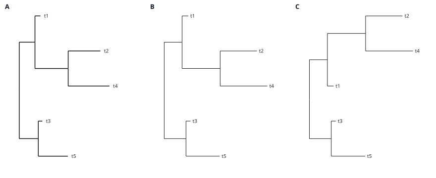
▶ Show / Hide Python Code plot_phyloggtreeladderizegeom_tiplab
from ggtree import set_seed, rtree, plot_phylo, ggtree, geom_tiplab, plot_list
set_seed(42)
x = rtree(5)
pa = plot_phylo(x)
pb = ggtree(x, ladderize=False) + geom_tiplab()
pc = ggtree(x) + geom_tiplab()
plot_list(pa, pb, pc, ncol=3, tag_levels="A")
A.5.2 Specifying the Order of Tips (rotateConstr)
Enforce a desired bottom-to-top tip ordering with rotateConstr() and preserve it during rendering via ladderize=False.
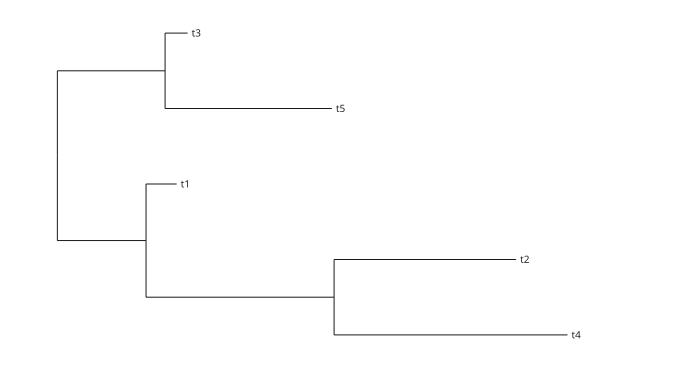
▶ Show / Hide Python Code rotateConstrggtreegeom_tiplabhexpand
from ggtree import set_seed, rtree, rotateConstr, ggtree, geom_tiplab, hexpand
set_seed(42)
x = rtree(5)
y = rotateConstr(x, ["t4", "t2", "t5", "t1", "t3"])
ggtree(y, ladderize=False) + geom_tiplab() + hexpand(0.15)
A.5.3 Shrink Outlier Long Branch (scale_x_break)
Handle extreme outgroup branch lengths either by compressing coordinates in p.data or by introducing an axis gap via scale_x_break([0.03, 0.09]).
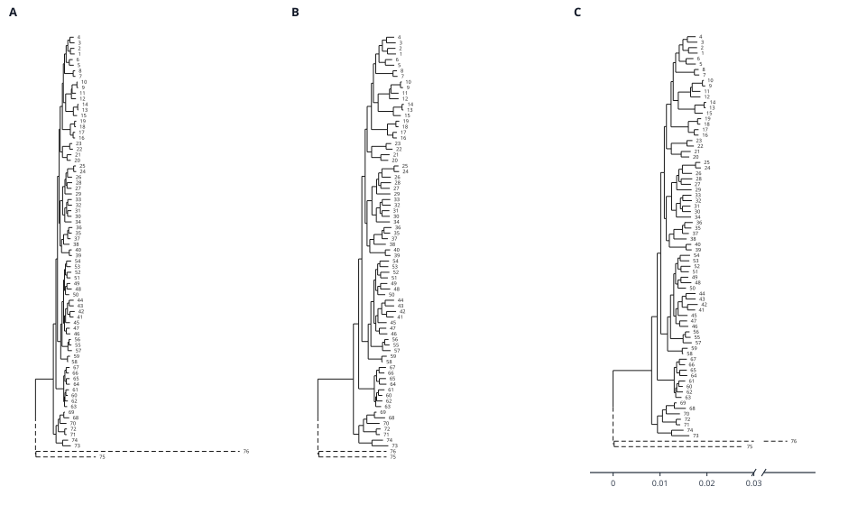
▶ Show / Hide Python Code scale_x_breakMRCAgroupCladehexpand
from ggtree import (
read_tree, system_file, MRCA, groupClade, ggtree, aes,
geom_tiplab, theme, scale_x_break, hexpand, plot_list,
)
x = read_tree(system_file("extdata", "TDbook", "tree_long_branch_example.nwk"))
m = MRCA(x, 75, 76)
y = groupClade(x, m)
p1 = ggtree(y, aes(linetype="group")) + geom_tiplab(size=2) + theme(legend_position="none")
p = p1.copy()
mean_x = sum(float(v) for v in p.data["x"]) / len(p.data)
p.data["x"] = [mean_x if int(nd) in (75, 76) else xv for nd, xv in zip(p.data["node"], p.data["x"])]
p2 = p1 + scale_x_break([0.03, 0.09]) + hexpand(0.05)
plot_list(p1, p, p2, ncol=3, tag_levels="A")
A.5.4 Attach a New Tip to a Tree (bind_tip)
Insert a new taxon onto a chosen branch with bind_tip(), distinguish its dashed edge via scale_linetype_manual(), and overlay attachment uncertainty with geom_errorbarh().

▶ Show / Hide Python Code bind_tipas_tibbleparentas_treedata
from ggtree import (
set_seed, rtree, bind_tip, as_tibble, parent, as_treedata,
ggtree, aes, geom_tiplab, geom_errorbarh, scale_linetype_manual,
theme, NA, hexpand,
)
set_seed(1993)
tr = rtree(5)
tr2 = bind_tip(tr, "U", edge_length=0.1, where=7, position=0.15)
d = as_tibble(tr2)
u_par = int(parent(d, "U")["node"][0])
d["type"] = ["newly introduced" if lbl == "U" else "original" for lbl in d["label"]]
d["sd"] = [0.05 if int(nd) == u_par else NA for nd in d["node"]]
tr3 = as_treedata(d)
p = (
ggtree(tr3, aes(linetype="type"))
+ geom_tiplab()
+ geom_errorbarh(aes(xmin="x - sd", xmax="x + sd", y="y - 0.3"), linetype="dashed", height=0.1)
+ scale_linetype_manual(values={"newly introduced": "dashed", "original": "solid"})
+ hexpand(0.15)
+ theme(legend_position=[0.8, 0.2])
)
p
A.5.5 Arbitrarily Colored & Styled Branches
Bind literal per-node color strings and numeric/named linetypes directly via identity mapping aes(colour='I(colour)', linetype='I(lty)') without generating extra legends.

▶ Show / Hide Python Code INnode2geom_labelaes
from ggtree import set_seed, rtree, Nnode2, data_frame, ggtree, geom_label, aes
set_seed(123)
x = rtree(10)
n_tot = Nnode2(x)
d = data_frame(
node=list(range(1, n_tot + 1)),
colour=["red" if i in (2, 3, 14, 15) else "black" for i in range(1, n_tot + 1)],
)
lty_map = {2: 2, 5: 3, 13: 2, 14: 4}
d2 = data_frame(
node=list(range(1, n_tot + 1)),
lty=[lty_map.get(i, 1) for i in range(1, n_tot + 1)],
)
p = ggtree(x) + geom_label(aes(label="node"))
p % d % d2 + aes(colour="I(colour)", linetype="I(lty)")
A.5.6 Add an Arbitrary Point on a Branch
Place markers along branches by offsetting x by an absolute constant or proportionally using x - branch_length * frac in geom_nodepoint().
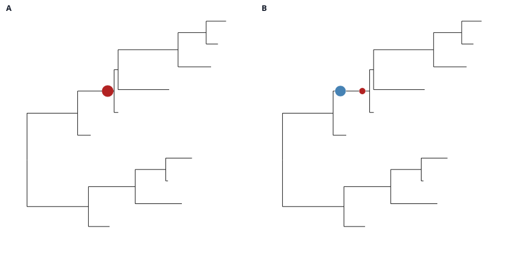
▶ Show / Hide Python Code geom_nodepointaesplot_list
from ggtree import set_seed, rtree, ggtree, geom_nodepoint, aes, plot_list
set_seed(2020 - 5 - 20)
x = rtree(10)
p = ggtree(x)
p1 = p + geom_nodepoint(aes(subset="node == 13", x="x - 0.1"), size=5, colour="firebrick", shape=21)
p2 = (
p
+ geom_nodepoint(aes(subset="node == 13", x="x - branch_length * 0.2"), size=3, colour="firebrick")
+ geom_nodepoint(aes(subset="node == 13", x="x - branch_length * 0.8"), size=5, colour="steelblue")
)
plot_list(p1, p2, ncol=2, tag_levels="A")
A.6 Different X-Axis Labels for Facet Panels
Pass a .panel-keyed DataFrame to geom_text() with negative y, coord_cartesian(clip='off'), and increased bottom margin to draw per-facet X-axis titles.
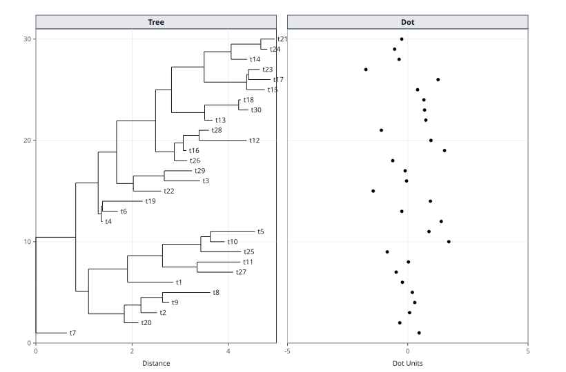
▶ Show / Hide Python Code geom_facettheme_bwxlim_treexlim_expand
from ggtree import (
set_seed, rtree, rnorm, data_frame, ggtree, geom_tiplab,
geom_facet, geom_point, aes, theme_bw, xlim_tree, xlim_expand,
scale_y_continuous, geom_text, coord_cartesian, theme, margin,
)
set_seed(2019 - 5 - 2)
x = rtree(30)
p = ggtree(x) + geom_tiplab()
d_val = data_frame(label=x.tip_label, value=rnorm(30))
p2 = (
p
+ geom_facet(panel="Dot", data=d_val, geom=geom_point, mapping=aes(x="value"))
+ theme_bw()
+ xlim_tree(5)
+ xlim_expand([-5, 5], "Dot")
)
d_lbl = data_frame(**{".panel": ["Tree", "Dot"], "lab": ["Distance", "Dot Units"], "x": [2.5, 0.0], "y": [-2.0, -2.0]})
res = (
p2
+ scale_y_continuous(limits=[0, 31], expand=[0, 0])
+ geom_text(aes(label="lab"), data=d_lbl)
+ coord_cartesian(clip="off")
+ theme(plot_margin=margin(6, 6, 40, 6))
)
res
A.7 Plot Something Behind the Phylogeny
Move clade highlights behind tree branches either by reversing p.layers or by building from ggplot(x) + geom_hilight(...) + geom_tree().
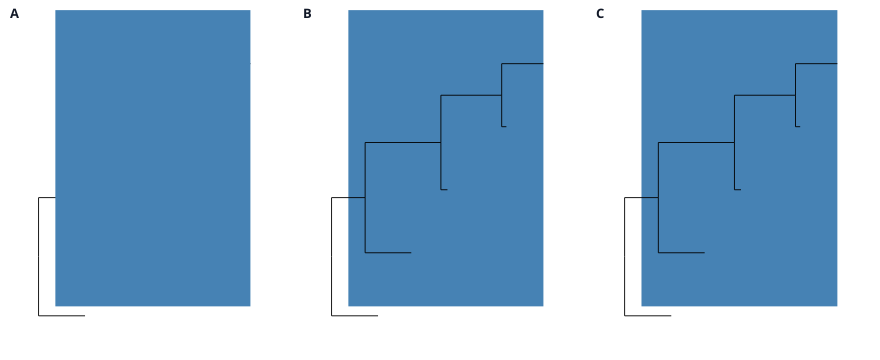
▶ Show / Hide Python Code geom_hilightggplotgeom_treetheme_tree
from ggtree import set_seed, rtree, ggtree, ggplot, geom_hilight, geom_tree, theme_tree, plot_list
set_seed(1982)
x = rtree(5)
p1 = ggtree(x) + geom_hilight(node=7, alpha=1)
p2 = p1.copy()
p2.layers = list(reversed(p2.layers))
p3 = ggplot(x) + geom_hilight(node=7, alpha=1) + geom_tree() + theme_tree()
plot_list(p1, p2, p3, ncol=3, tag_levels="A")
A.8 Enlarge Center Space in Circular/Fan Tree
Open central radial whitespace in circular layouts using negative lower xlim(-10, NA) or by adding an extended geom_rootedge(5).
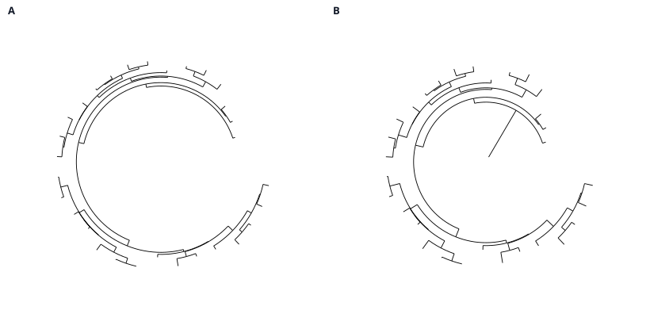
▶ Show / Hide Python Code layout_circularxlimgeom_rootedgeplot_list
from ggtree import set_seed, rtree, ggtree, xlim, NA, geom_rootedge, plot_list
set_seed(1982)
tree = rtree(30)
pa = ggtree(tree, layout="circular") + xlim(-10, NA)
pb = ggtree(tree, layout="circular") + geom_rootedge(5)
plot_list(pa, pb, tag_levels="A", ncol=2)
A.9 Most Distant Tip as Origin of Timescale (revts)
Transform forward root-to-tip branch coordinates to backward time before present with revts(p) + scale_x_continuous(labels=abs).
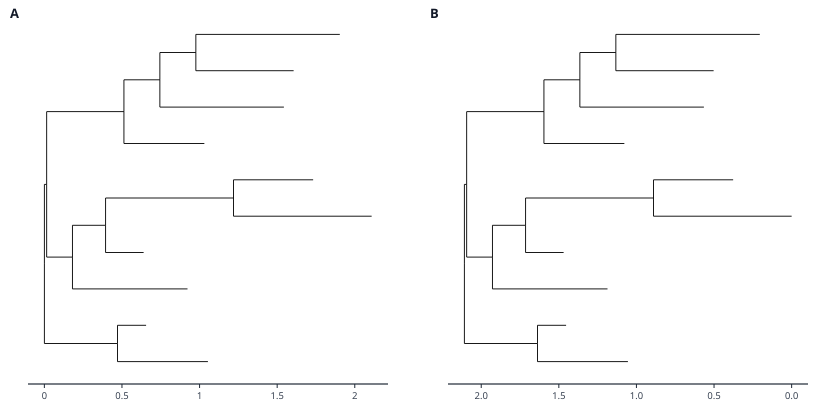
▶ Show / Hide Python Code revtsscale_x_continuoustheme_tree2plot_list
from ggtree import set_seed, rtree, ggtree, theme_tree2, revts, scale_x_continuous, plot_list
set_seed(123)
tr = rtree(10)
p = ggtree(tr) + theme_tree2()
p2 = revts(p) + scale_x_continuous(labels=abs)
plot_list(p, p2, ncol=2, tag_levels="A")
A.10 Remove Blank Margins (magick / image_trim)
Render circular graphics via ggsave(), auto-crop transparent margins using image_read() + image_trim(), and re-wrap with image_ggplot().
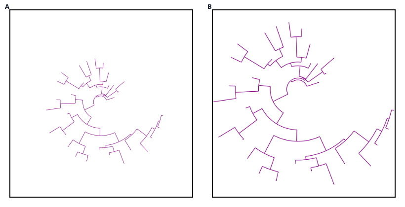
▶ Show / Hide Python Code ggsaveimage_readimage_trimimage_ggplot
import tempfile
from ggtree import (
set_seed, rtree, ggtree, ggsave, image_read, image_trim,
image_ggplot, theme, element_rect, NA, plot_list,
)
set_seed(2021)
tr = rtree(30)
p = ggtree(tr, size=1, colour="purple", layout="circular")
with tempfile.NamedTemporaryFile(suffix=".png") as tf:
ggsave(filename=tf.name, plot=p, width=7, height=7)
x_img = image_read(tf.name, density=300)
y_img = image_trim(x_img)
panel_border = theme(panel_border=element_rect(colour="black", fill=NA, size=2))
xx = image_ggplot(x_img) + panel_border
yy = image_ggplot(y_img) + panel_border
plot_list(xx, yy, tag_levels="A", ncol=2)